How to set up auto-mod
This guide will show you how to set up the auto-mod features.
This will apply to all auto-mod features, but for the purposes of this guide we'll be setting up 2 features:
- Anti-ads
- Word-filter
Refer to the basic guide if you're unfamiliar with your settings file, and to the documentation for information on the entire settings file.
1) Anti-ads
1. Open your settings file.
2. Scroll to the "anti-ads" category.
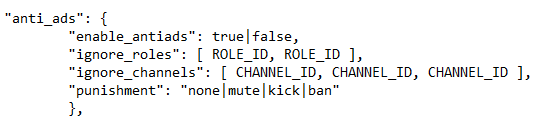
3. To enable anti-ads, set "enable_antiads" to true.
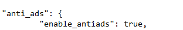
4. To ignore certain roles/channels, copy the ID's.
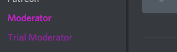
5. Paste the ID's in the "ignore_roles" or "ignore_channels" list.
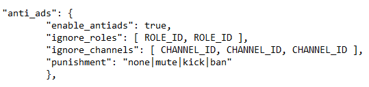
6. Select the instant punishment when someone gets caught by anti-ads.
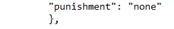
Example result:
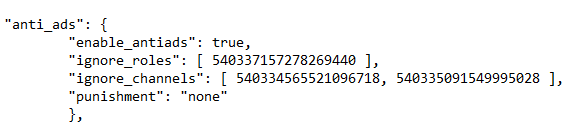
7. Upload your settings file to Konek0.
2) Word-filter
1. Open your settings file.
2. Scroll to the "word-filter" category.
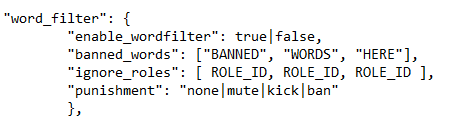
3. To enable the word-filter, set "enable_wordfilter" to true.
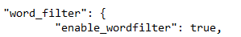
4. Put the banned text in the "banned_words" list.
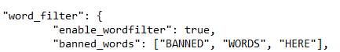
5. Add roles that bypass the word-filter by putting the ID's in the "ignore_roles" list.
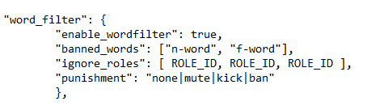
6. Select the instant punishment when someone gets caught by the word-filter.
Example result:
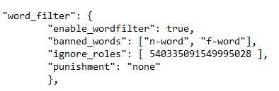
7. Upload your settings file to Konek0.
This guide covered 2 auto-mod features, but this can be applied to every auto-mod feature in your settings file.
Refer to the documentation for information on every other feature.